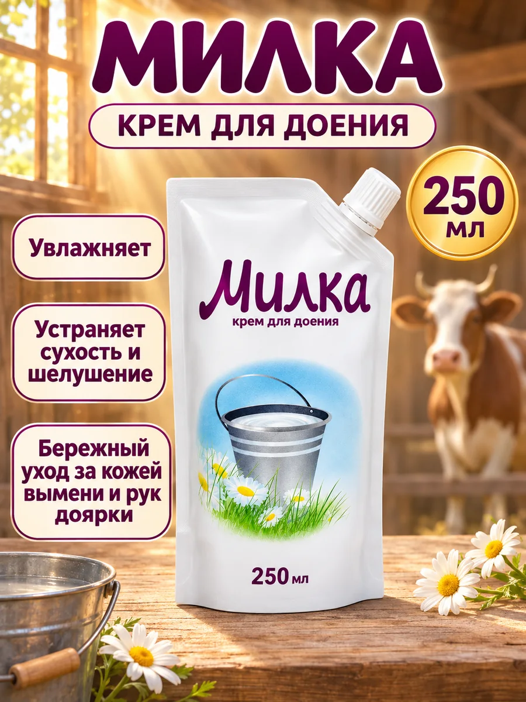
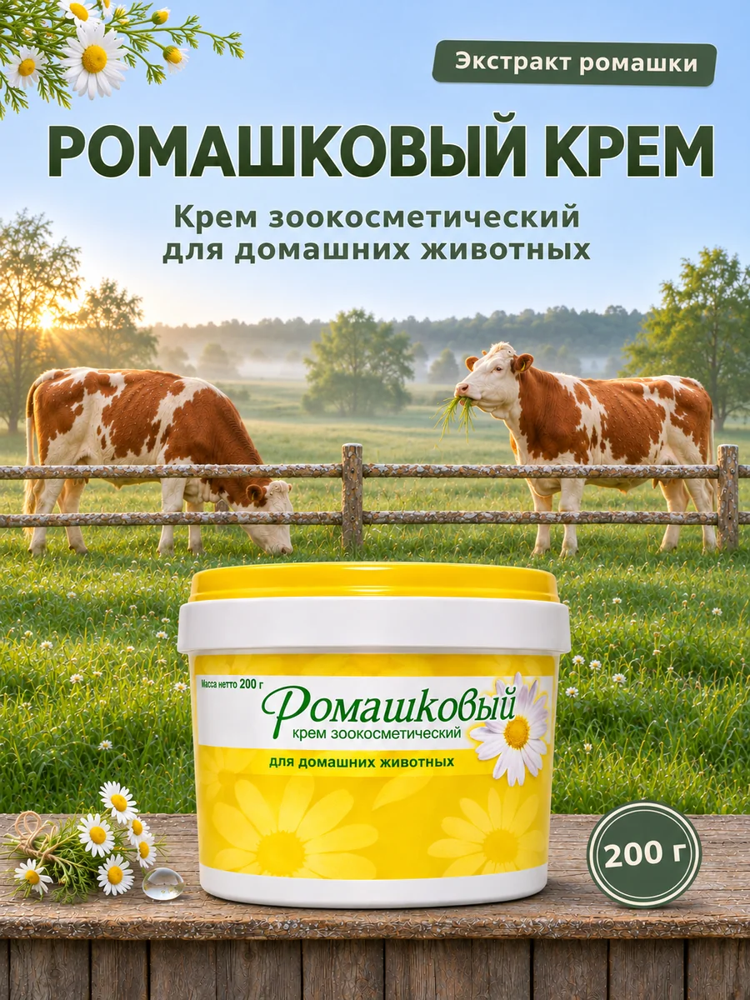
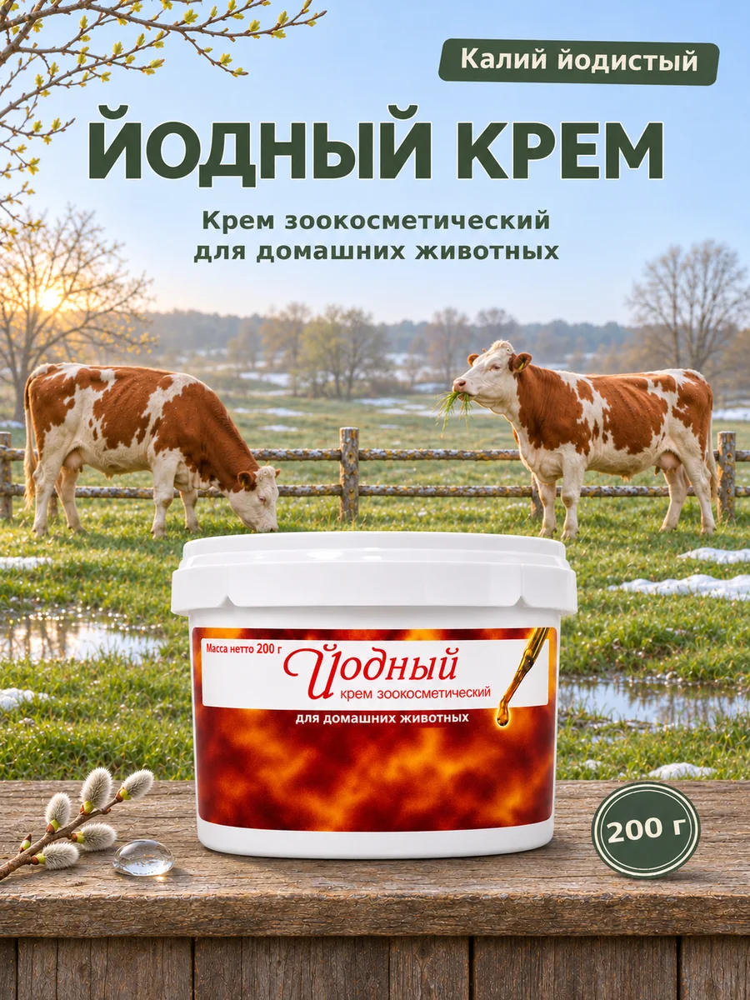

Крем для вымени: вазелин, «Милка» или кремы с экстрактами
Все эти средства делают одно и то же — ухаживают за кожей. Разбираем, чем они различаются по составу и когда что удобнее.
Коротко
- Все эти средства — уход за кожей: смягчение и защита от обветривания. Лечением они не являются.
- Вазелин — однокомпонентное средство, образующее защитную плёнку.
- Крем для доения «Милка» — состав сложнее: глицерин, карбамид, масла, желатин и экстракт ромашки.
- Кремы с экстрактами различаются между собой действующим компонентом из названия.
- Нужно ли удалять средство перед доением, производители на упаковках не уточняют. Мы запросили ответ.
Что это за средства
Уход за кожей вымени нужен по понятной причине: кожа контактирует с водой, салфетками и доильным аппаратом, а зимой ещё и с морозом. Задача средства — смягчать кожу и помогать защищать её от обветривания.
Сразу обозначим границу: это зоокосметика, а не лекарство. Трещины, покраснение, отёк и уплотнения — это к ветеринарному специалисту, а не к крему.
Чем они различаются
| Вазелин | «Милка», крем для доения | Кремы с экстрактами | |
|---|---|---|---|
| Состав | Вазелин | Глицерин, карбамид, соевое и парафиновое масло, желатин, экстракт ромашки | Основа плюс компонент из названия |
| Фасовка | Банка 200 г | Дой-пак с дозатором, 250 мл | Банка 200 г |
| Как работает | Образует плёнку на коже | Смягчает, наносится до и после доения | Уход за кожей |
| Хранение | От 0 до +30 °C | От 0 до +25 °C | На упаковке |
| Срок годности | 2 года | 4 года | На упаковке |
| Для рук доярки | Не указано | Указано производителем | Не указано |
Пустые клетки — там, где у нас нет данных с этикетки. Мы их запросили и до ответа не заполняем.
Как выбирать
Вазелин — простое решение, когда нужна именно защитная плёнка и минимум компонентов. Состав из одного вещества удобен, если вы осторожно относитесь к отдушкам и добавкам.
Крем для доения — когда важно удобство: дой-пак с дозатором отмеряет порцию одной рукой, а производитель прямо указывает применение до и после доения в три шага. Это же средство заявлено и для ухода за кожей рук доярки.
Кремы с экстрактами — когда нужен конкретный компонент: ромашка, облепиха, йодсодержащий компонент или пихта. Различаются они именно этим.
Мы не пишем, что эти средства заживляют трещины, снимают воспаление или дезинфицируют. Такие утверждения встречаются на упаковках и в описаниях, но это заявления о лечебном действии, и повторять их мы не будем.
Зимой
На морозе кожа обветривается сильнее, и уход становится заметнее нужен. Обратите внимание на условия хранения: у вазелина заявлен диапазон от 0 до +30 °C, у крема для доения — от 0 до +25 °C. Поведение средства при отрицательной температуре производители не описывают.
Практический вывод простой: не держите банку в неотапливаемом помещении зимой.
Подробнее про зимний уход — в статье о сухости сосков.
Когда обращаться к ветеринару
Обратитесь к ветеринарному специалисту, если заметили:
- отёк или уплотнение доли вымени;
- изменение цвета молока, хлопья или сгустки;
- болезненность при доении;
- повышение температуры у животного;
- трещины, которые не заживают, с краснотой вокруг.
Крем в этих случаях не поможет, а время будет потеряно.
Частые вопросы
Нужно ли смывать крем перед доением?
Следуйте указаниям на упаковке. Отдельного разрешения не удалять средство перед доением производители не дают, поэтому мы такого не утверждаем. Ответ мы запросили.
Можно ли пользоваться кремом для рук?
У крема для доения «Милка» уход за кожей рук доярки указан производителем. У остальных средств такого указания нет.
Чем йодный крем отличается от пихтового?
Компонентом, который указан в названии и в составе. Других подтверждённых различий у нас нет, и приписывать им разные свойства мы не будем.
Застывает ли вазелин на морозе?
Производитель указывает хранение от 0 до +30 °C, поведение при отрицательной температуре не описывает. Практически это значит, что банку не стоит оставлять на холоде.
Что взять

Милка, крем для доения, 250 мл Средства ухода Подробнее Вазелин SPAZ FARM, 200 г
Средства ухода
Подробнее
Вазелин SPAZ FARM, 200 г
Средства ухода
Подробнее

Ромашковый крем, 200 г Средства ухода Подробнее
Йодный крем, 200 г Средства ухода ПодробнееЦены на сайте демонстрационные. Купить можно на Ozon — кнопка на странице товара.